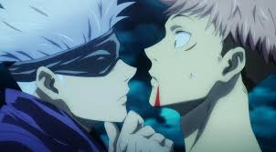

About Gojo
Gojo is one one the main characters of Jujutsu Kaisen and is arguable the strongest. He is currently teaching Itadori how to control Sukuna since he swallowed his finger.
Gojo checking if Itadori still has control
Characteristics
- Strongest character in the Verse
- White hair
- Wears cloth around his eyes becuase they're OP!
Friends
Gojo would could consider all of his students his friends, even if they wouldn't say they same thing back! Click each to learn more.